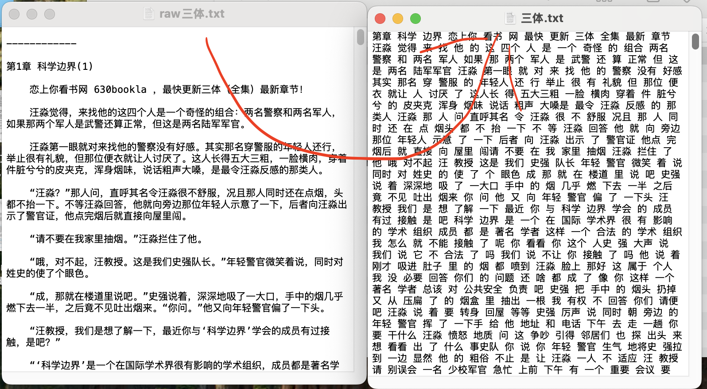
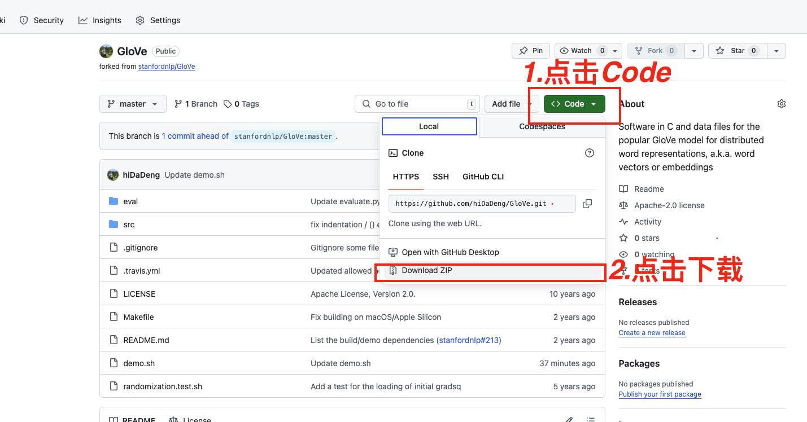
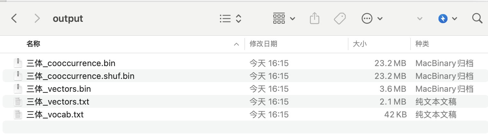
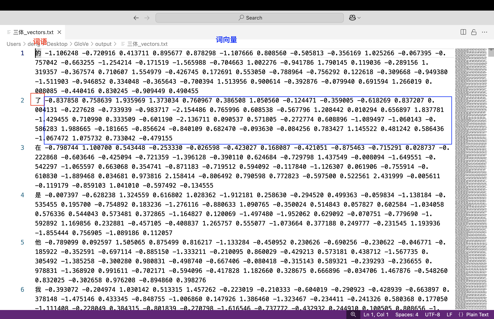
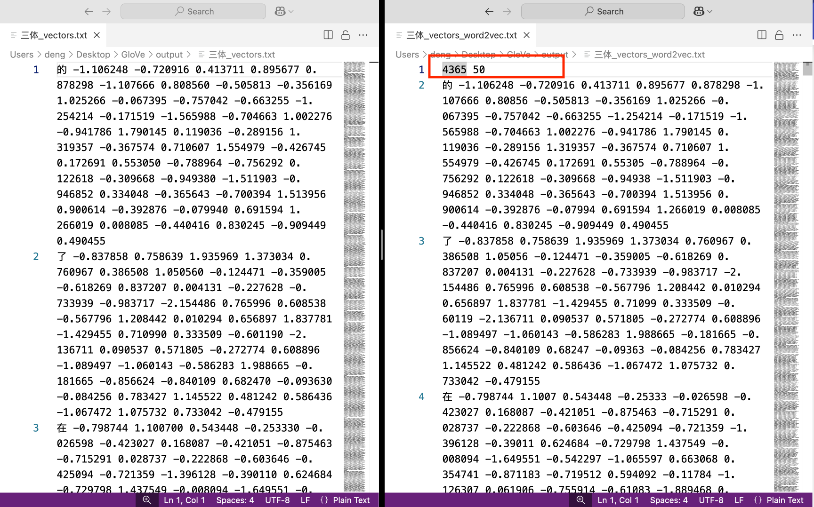

一、简介
Stanford GloVe（Global Vectors for Word Representation）算法作为一种融合全局统计信息与局部上下文窗口的词嵌入模型，相较于Word2Vec仅依赖局部上下文，GloVe利用全局统计信息，能更精准地反映词频分布特征。例如，在高维词向量（如200D）中，GloVe在词语类比任务中准确率达75%，并在命名实体识别任务中优于其他词嵌入模型。因其高效的语义表征能力，在社会学、管理学等领域展现出广泛的应用价值。 相关词嵌入文献资料可阅读
- https://textdata.cn/blog/2023-11-03-organization-science-with-word-embeddings/
- 转载|大数据时代下社会科学研究方法的拓展——基于词嵌入技术的文本分析的应用
- 词嵌入技术在社会科学领域进行数据挖掘常见39个FAQ汇总
- 文献汇总 | 词嵌入 与 社会科学中的偏见(态度)
- 词嵌入测量不同群体对某概念的态度(偏见)
二、环境准备
2.1 Windows
-
打开 cmd（建议以管理员身份运行）。
-
运行以下命令来安装 Chocolatey：
Set-ExecutionPolicy Bypass -Scope Process -Force; [System.Net.ServicePointManager]::SecurityProtocol = [System.Net.SecurityProtocolType]::Tls12; iex ((New-Object System.Net.WebClient).DownloadString('https://community.chocolatey.org/install.ps1')) -
安装完成后，重新打开一个新的 cmd 窗口。 运行以下命令确认 Chocolatey 是否成功安装：
choco --version -
安装 make
choco install make -
安装完成后，重新打开一个新的 cmd 窗口。 运行以下命令确认 make 是否成功安装：
make --version -
获取cntext2.x 的安装文件 cntext-2.1.4-py3-none-any.whl，并将该whl文件放置于桌面。执行以下安装命令
cd Desktop pip install cntext-2.1.4-py3-none-any.whl
2.2 Mac
-
打开 terminal，执行命令
/bin/bash -c "$(curl -fsSL https://raw.githubusercontent.com/Homebrew/install/HEAD/install.sh)" -
安装完成后，重新打开一个新的 terminal 窗口。 运行以下命令确认 Homebrew 是否成功安装：
brew --version -
安装 make
brew install make -
安装完成后，重新打开一个新的 terminal 窗口。 运行以下命令确认 make 是否成功安装：
make --version -
获取cntext2.x 的安装文件 cntext-2.1.4-py3-none-any.whl，并将该whl文件放置于桌面。执行以下安装命令
cd desktop pip3 install cntext-2.1.4-py3-none-any.whl
三、训练中文GloVe
3.1 准备中文语料
以三体小说为例，

import re
import jieba
# 读取原始数据「raw三体.txt」
raw_text = open('raw三体.txt').read()
# 去除非中文字符
chinese_text = ''.join(re.findall(r'[\u4e00-\u9fa5]+', raw_text))
# 分词并保存到「三体.txt」中
with open('三体.txt', 'a+', encoding='utf-8') as f:
f.write(' '.join(jieba.lcut(text)))
3.2 下载GloVe
这里大邓准备了两个选择
- stanfordnlp/GloVe https://github.com/stanfordnlp/GloVe
- hiDaDeng/GloVe https://github.com/hiDaDeng/GloVe
stanfordnlp/GloVe设计很巧妙， 但该项目没有展示环境配置、中文实验数据、中文实验结果。
因此， 大邓在 stanfordnlp/GloVe 基础上， 添加了增加了环境配置、代码参数说明、准备中文实验数据、中文实验结果等说明。
接下来以 hiDaDeng/GloVe 做说明。

3.3 GloVe文件目录
从 hiDaDeng/GloVe 解压后得到 GloVe-master 文件夹。 GloVe-master 目录(含义)
GloVe
├── README.md GloVe代码说明文档
├── src GloVe算法C语言源代码
├── eval 评估代码
├── demo.sh GloVe训练命令(这里是重点)
├── output GloVe训练输出文件夹；此处存储着大邓使用{三体.txt}训练出的Glove模型相关文件
│ ├── 三体_cooccurrence.bin
│ └── 三体_cooccurrence.shuf.bin
│ └── 三体_vectors.txt
│ └── 三体_vectors.bin 三体_vocab.txt
│ └── 三体_vocab.txt
这里我们展示下 demo.sh的源代码， 并对部分代码进行展示说明。
# 设置语料数据文件
# 注意: 中文语料文件必须是分词后的文本文件。
# 如 「我是中国人，我爱中国」 要整备成 「我 是 中国人 ， 我 爱 中国」
CORPUS_FILE = 三体.txt
# 创建 output 文件夹，保存训练结果(模型文件bin/txt等文件)
OUTPUT_DIR = "output"
# 程序运行时允许使用的最大内存，单位为 GB
# 注意: 此值越大，程序运行速度可能越快，但也会占用更多系统资源
MEMORY = 4.0
# 词汇表中单词的最小出现次数
# 出现次数低于此值的单词将被忽略，以减少词汇表的大小
# 注意: 此值越大，模型可能越精确，但词汇表也会越小
VOCAB_MIN_COUNT = 5
# 每个单词向量的维度大小
# 维度越大，向量表示的信息越丰富，但计算成本也越高
VECTOR_SIZE = 50
# 训练模型的最大迭代次数
# 迭代次数越多，模型可能越精确，但训练时间也会相应增加
MAX_ITER = 15
# 计算共现矩阵时考虑的上下文窗口大小
# 即当前单词前后各多少个单词会被考虑在内
WINDOW_SIZE = 15
# 训练模型时使用的线程数量
# 线程数越多，训练速度可能越快，但也会占用更多系统资源
NUM_THREADS = 8
# 共现矩阵中元素的最大计数值； 超过此值的元素将被截断为该值
X_MAX = 10
3.4 开始训练
以准备好的 三体.txt 语料文件为例， 训练 50 维的 GloVe 模型(VECTOR_SIZE=50)， 结果保存到 output 文件夹内。
-
打开 cmd (Mac用户打开terminal) 。
-
将 GloVe-master 文件夹移动到桌面。 在 cmd 执行以下命令，切换工作目录到 GloVe-master 文件夹。
cd desktop/GloVe-master -
在 cmd 中执行
./demo.sh
大概运行了几分钟就出结果了。

3.5 转化成Word2Vec格式
打开 三体_vectors.txt 查看不同词语对应的词向量

注意刚刚生成的 output/三体_vectors.txt 是无法用 python 直接利用的。
使用 gensim库 或 cntext2.x 库将其转化为 word2vec 格式的txt文件。
import cntext as ct
glove_file = 'output/三体_vectors.txt'
word2vec_file = 'output/三体_vectors_word2vec.txt'
# 将Glove转化为Word2Vec格式
ct.glove2word2vec(glove_file, word2vec_file)

其实两个txt文件的区别，仅仅是在 三体_vectors_word2vec.txt 在第一行多了两个数字， 分别代表词汇表大小和向量维度。
四、使用中文GloVe模型
4.1 加载模型
import cntext as ct
word2vec_file = 'output/三体_vectors_word2vec.txt'
# 加载word2vec模型.txt文件
wv_model = ct.load_wv(word2vec_file, binary=False)
wv_model
Run
<gensim.models.keyedvectors.KeyedVectors at 0x336ff8dd0>
4.2 KeyedVectors的操作方法(或属性)
| 方法 | 描述 |
|---|---|
KeyedVectors.key_to_index |
获取单词到索引的映射。 |
KeyedVectors.vector_size |
获取GloVe模型中任意词向量的维度。 |
KeyedVectors.get_vector(word) |
获取给定单词的词向量。 |
KeyedVectors.index_to_key |
获取词汇表中的所有单词。 |
KeyedVectors.similar_by_word(word, topn=10) |
获取某词语最相似的10个近义词。 |
KeyedVectors.similar_by_vector(vector, topn=10) |
获取词向量最相似的10个近义词。 |
| … | … |
4.2.1 词表
wv_model.index_to_key
Run
['的',
'了',
'在',
...
'引力',
'所说',
'星际',
...]
4.2.2 词表映射
wv_model.key_to_index
Run
{'的': 0,
'了': 1,
'在': 2,
...
'引力': 997,
'所说': 998,
'星际': 999,
...}
4.2.3 向量维度数
print(f'词表有 {len(wv_model.key_to_index)} 个词')
print(f'向量是 {wv_model.vector_size} 维')
Run
词表有 4365 个词
向量是 50 维
4.2.4 获取词向量
# 查看「降临」的词向量
wv.get_vector('降临')
Run
array([ 0.672314, 0.020081, 0.653733, 0.598732, -0.680517, -0.049689,
-0.16845 , -0.06759 , -0.147955, 0.024006, 0.264551, -0.050127,
0.252063, -0.475633, 0.103722, -0.012481, 0.040755, 1.154912,
0.742695, 0.048619, -0.514424, -1.184054, 0.515892, -0.1034 ,
0.368755, -0.690357, -0.784287, -0.505814, 0.035807, -0.166354,
-0.26149 , 0.015089, 0.10626 , -0.215666, -0.374001, -0.123558,
0.422617, -0.075277, -0.316387, -0.484295, 0.059687, 0.132621,
0.192094, -0.591919, 0.236281, 0.164198, -0.058724, 1.285457,
0.905606, -0.52032 ], dtype=float32)
4.2.5 近义词
wv.similar_by_word('三体', topn=10)
Run
[('叛军', 0.7699569463729858),
('更新', 0.7687217593193054),
('地球', 0.760529100894928),
('全集', 0.7575182914733887),
('最快', 0.7426372170448303),
('世界', 0.7262137532234192),
('最新', 0.7219281792640686),
('游戏', 0.7180070877075195),
('危机', 0.7020451426506042),
('教', 0.7012627720832825)]
4.2.6 计算多个词的中心向量
我们可以计算「三体」、「降临」、「组织」、「拯救」的中心向量eto_vector。 并试图寻找中心向量eto_vector的最相似的10个词。
eto_vector = ct.semantic_centroid(wv=wv, words=['三体', '降临', '组织', '拯救'])
print(eto_vector)
# 寻找 eto_vector 语义最相似的10个词
wv.similar_by_vector(eto_vector, topn=10)
Run
[ 0.6267875 0.08975425 0.48438451 0.405128 -0.49928901 0.11347825
-0.90057975 0.11877625 -0.27053049 0.344603 0.4368495 -0.3839495
0.02633176 -0.138534 0.2531555 -0.0060905 -0.48776849 0.75548999
0.72575876 -0.446079 -0.30361701 -1.039792 0.457687 -0.4286315
0.44577325 -0.39119426 -0.4783935 -0.2596135 -0.32513325 -0.10315975
-0.42880575 -0.48328425 0.129438 -0.17085625 -0.13454625 -0.070053
0.68060375 0.16736924 -0.15664874 -0.20528575 0.385481 0.206432
0.18913225 -0.93453825 0.58597099 0.60727924 0.009064 0.87661726
0.65814423 -0.356567 ]
[('降临', 0.8707027435302734),
('组织', 0.8625670671463013),
('三体', 0.8621653914451599),
('派', 0.8343338966369629),
('拯救', 0.8301094174385071),
('叛军', 0.784512460231781),
('地球', 0.7536635398864746),
('世界', 0.7245718836784363),
('外部', 0.7078365087509155),
('入侵', 0.6962169408798218)]
熟悉三体的朋友应该能联想到背叛人类的ETO(地球三体组织)有两个派别，分别是拯救派和降临派。
ETO开发了一款虚拟现实游戏，它向参与者展示了三体世界的真实情况，包括其恶劣的自然条件、三体文明的历史及其科技水平等。通过参与这个游戏，玩家们能够逐渐了解三体世界的真相，并最终决定是否要加入到支持三体文明入侵地球的行列中来。
这个游戏不仅充当了信息传递的媒介，也是甄别志同道合者的工具，让那些对人类社会现状不满、渴望变革的人们找到了组织，进而成为了背叛人类的叛军一员。在这个过程中，“三体游戏”起到了关键的作用，是连接地球人与三体世界的重要桥梁。